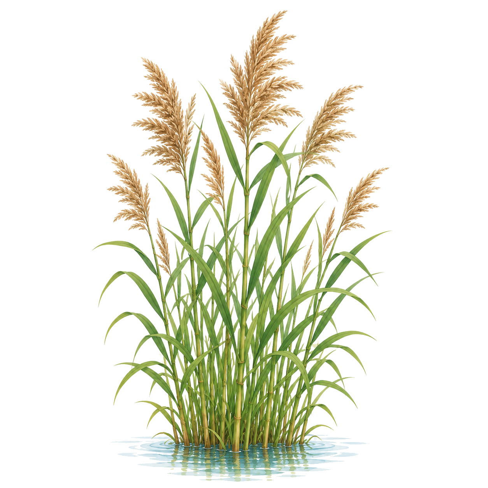
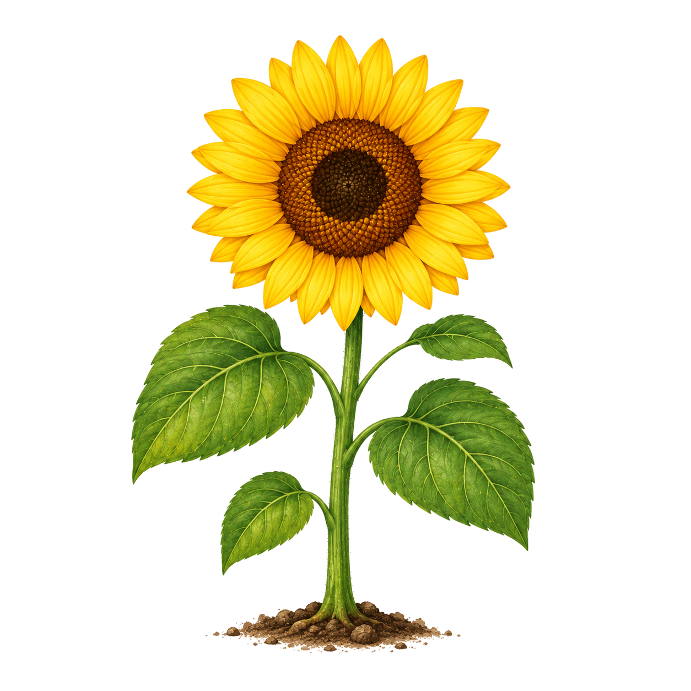
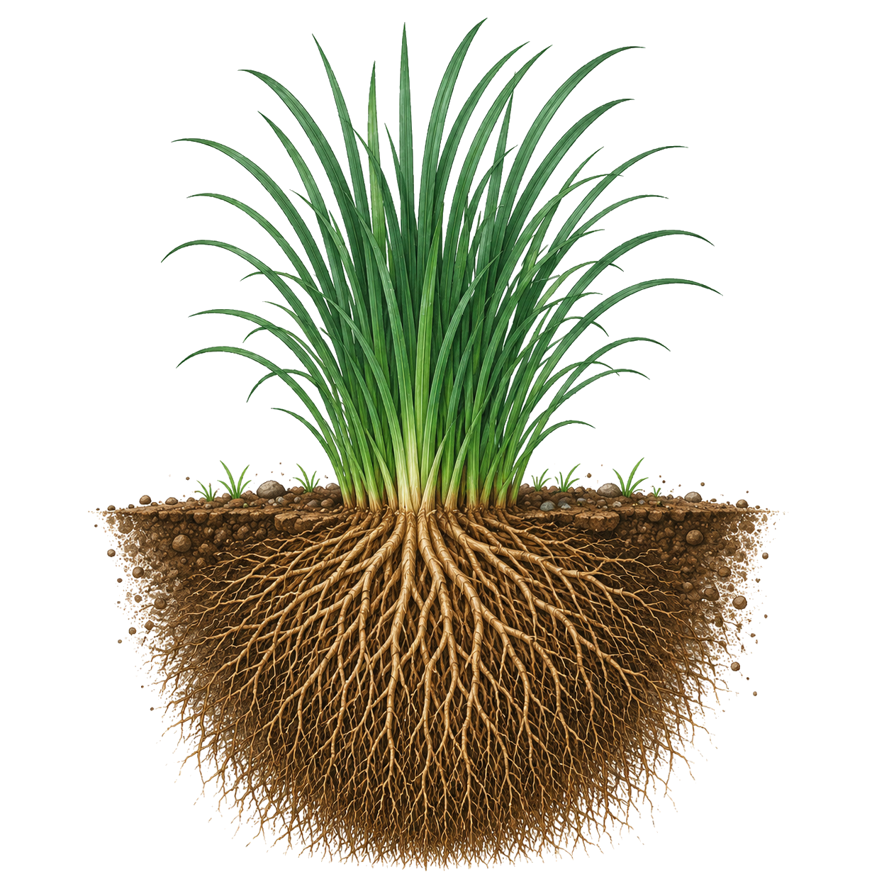
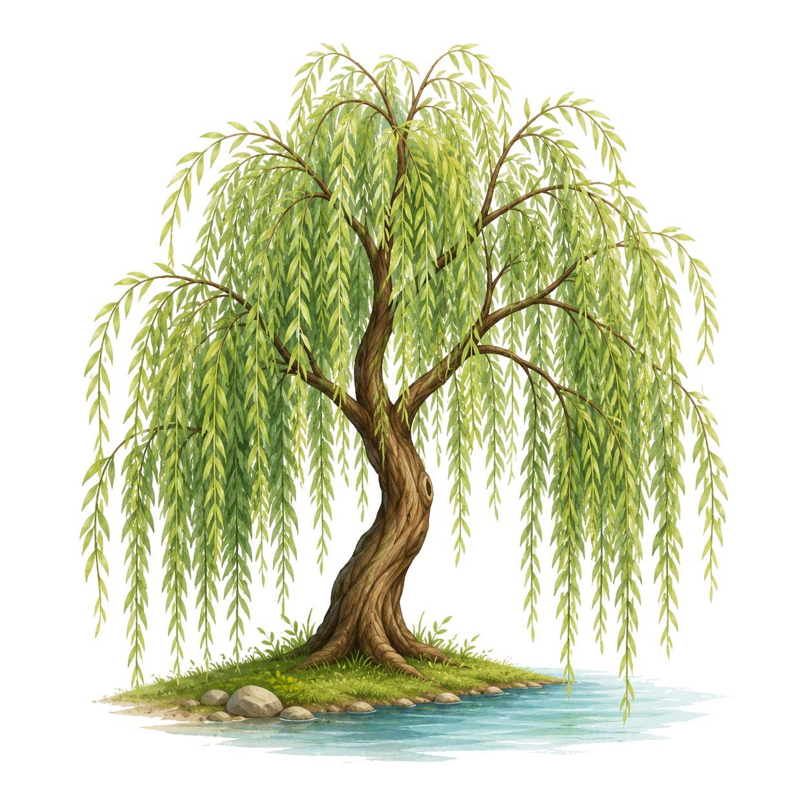

小葵体检状态
什么是植物修复？
植物修复（Phytoremediation）是一种利用绿色植物来去除、转移、稳定或降解环境中污染物的技术。它成本较低，对环境友好，是一种可持续的修复方法。与传统物理化学修复相比，植物修复成本仅为后者的1/10-1/3，且具有美化环境、增加碳汇等附加效益。
植物修复的五大机制
1. 植物提取（Phytoextraction）
原理：植物吸收土壤中的重金属并富集在地上部分，通过收割植物实现污染物的移除。超富集植物（Hyperaccumulator）可在地上部分积累重金属浓度超过普通植物100倍以上。判定标准：叶片中Cd、Pb含量>100 mg/kg，或Zn、Mn含量>10,000 mg/kg（干重）。
案例：向日葵在切尔诺贝利核电站周边用于提取土壤中的铯-137（¹³⁷Cs）和锶-90（⁹⁰Sr），每公顷可提取数克放射性核素。印度芥菜（Brassica juncea）对镉的提取量可达100-400 g/ha·年。
2. 植物稳定化（Phytostabilization）
原理：植物通过根系分泌物和根际微生物作用，将重金属转化为难溶态或吸附固定在根系表面，降低其迁移性和生物有效性，而非移除污染物。适用于大面积、低浓度污染场地。
案例：香根草根系可分泌有机酸与重金属络合，使土壤中铅、镉的有效态降低40-70%。柳树根系与菌根真菌共生，可稳定河岸土壤中的重金属，防止其随径流迁移。
3. 植物降解（Phytodegradation）
原理：植物吸收有机污染物后，在体内通过酶促反应将其降解为无毒或低毒物质。植物体内的过氧化物酶、细胞色素P450等可催化有机污染物的氧化、还原、水解反应。
案例：柳树可吸收并降解三氯乙烯（TCE）、多环芳烃（PAHs）等有机污染物，降解率可达60-90%。杨树对阿特拉津等除草剂的降解效率显著高于自然衰减。
4. 根际过滤（Rhizofiltration）
原理：植物根系直接从水体中吸附、沉淀重金属离子。根系表面积大、细胞壁带负电荷，可静电吸附金属阳离子；同时根系分泌的有机酸可与金属离子络合沉淀。
案例：水葫芦、浮萍可在根系富集水体中的镉、铅、汞，富集系数可达1000-10,000倍。向日葵根系在切尔诺贝利核电站用于处理含放射性核素的废水，去除率>95%。
5. 植物挥发（Phytovolatilization）
原理：植物吸收污染物后，将其转化为挥发性形态释放到大气中。主要适用于汞、硒、砷等可形成挥发性化合物的元素。
案例：转基因拟南芥（转入细菌汞还原酶基因merA）可将离子汞（Hg²⁺）还原为元素汞（Hg⁰）并挥发释放，挥发速率比野生型高10倍以上。杨树可将土壤中的硒甲基化后挥发释放。
植物修复图鉴
点击卡片翻转，查看植物修复详情

芦苇
湿地植物
芦苇
适用场景：湿地净化、河道修复、人工湿地污水处理
修复作用：吸收水中氮磷，对氮去除率70-90%，对磷去除率60-80%。根系分泌氧气构建好氧-缺氧-厌氧微环境，促进硝化-反硝化脱氮。每平方米芦苇年可吸收氮50-100g、磷5-15g。
注意事项：需充足水源，适合湿地环境。人工湿地设计需控制水力停留时间3-7天，水深0.3-0.6m。

向日葵
重金属修复植物
向日葵
适用场景：重金属污染土壤（Pb、Cd、Zn）、放射性核素污染
修复作用：向日葵对铅的富集系数可达20-50，对镉的富集系数10-30。切尔诺贝利案例：向日葵根系从水体中提取铯-137和锶-90，去除率>95%。每公顷向日葵可提取镉100-400g/年。
注意事项：收割后需焚烧或安全填埋，避免重金属再次进入环境。不宜在农田直接使用，防止进入食物链。

香根草
水土保持植物
香根草
适用场景：边坡防护、水土流失区、重金属污染土壤稳定化
修复作用：根系深达2-3米，形成"地下篱笆"固土护坡。可稳定土壤中的Pb、Cd、Cr等重金属，有效态降低40-70%。耐旱、耐涝、耐贫瘠，适应性极强。
注意事项：不产生种子，通过分蘖繁殖，避免生物入侵风险。种植密度建议株距10-15cm。

柳树
生态修复树种
柳树
适用场景：河岸修复、湿地重建、有机污染物降解、重金属污染场地
修复作用：柳树对TCE、PAHs等有机污染物的降解率达60-90%。根系与菌根真菌共生，增强重金属吸收能力。年生物量可达10-20吨/ha，适合能源化利用。
注意事项：生长迅速，需定期管理。根系可能破坏地下管道，种植需避开基础设施。